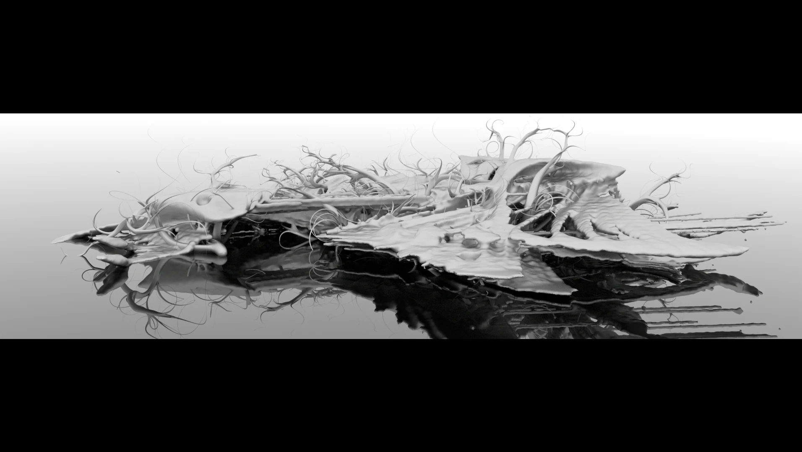
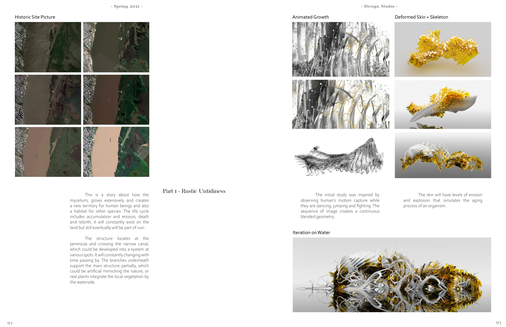
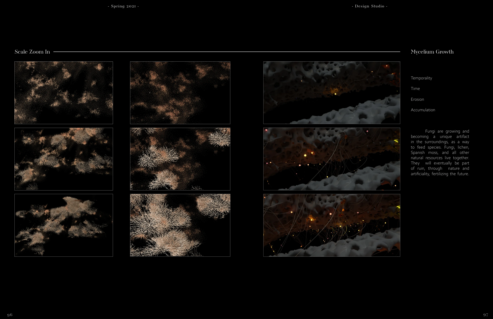
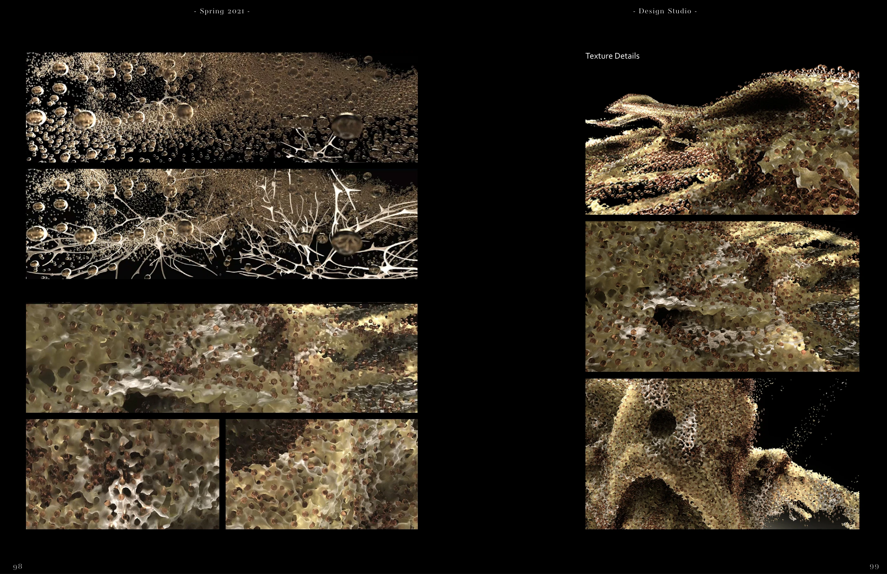
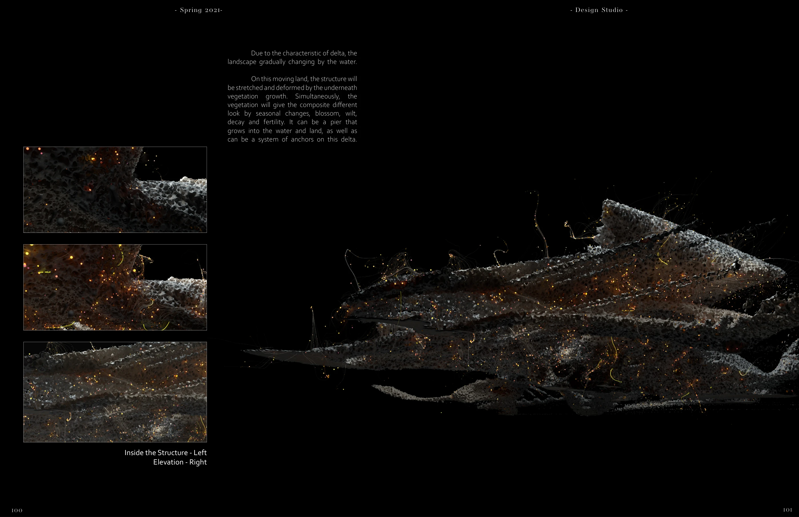

Super Hongo
An environment shaped by growth, accumulation, erosion, and the life cycle of fungi: architecture imagined as something that changes with time.
Individual work · SCI-Arc, Spring 2021 · Instructor: Hernán Díaz Alonso
Unreal Engine · Rhino · Maya · Houdini · Cinema 4D

Motion becomes structure
Early studies use sequences of human motion to generate continuous forms. Skin and skeleton experiments explore deformation, aging, and growth along a waterside site.

Time as a material
Mycelium, lichen, and moss accumulate and erode. Rather than describing a single finished object, the study follows an environment through changing states.


A changing territory
Vegetation, water, and seasonal change reshape the structure and its relation to the land.

A film excerpt.
A selected sequence from the project.